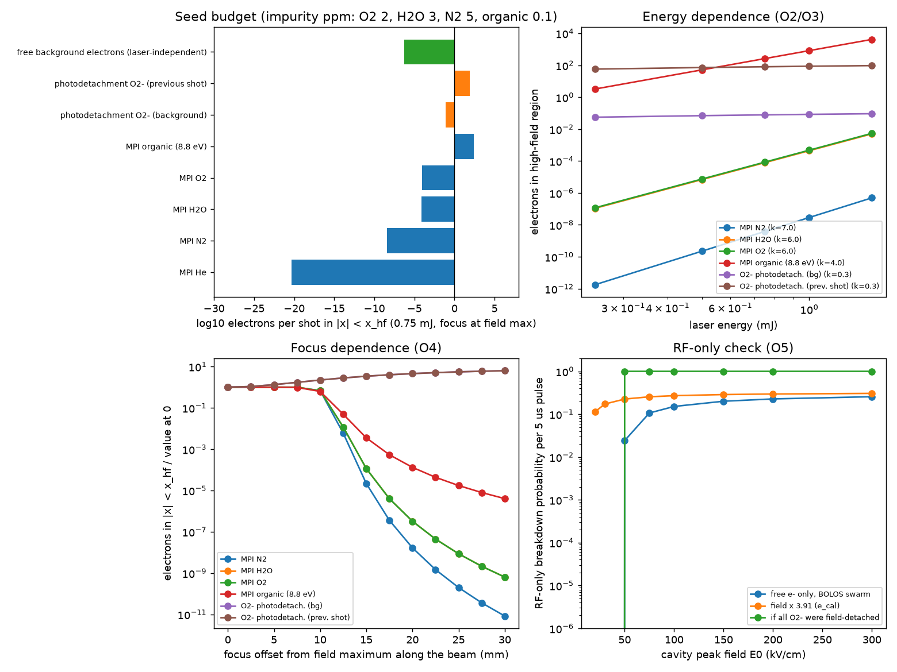
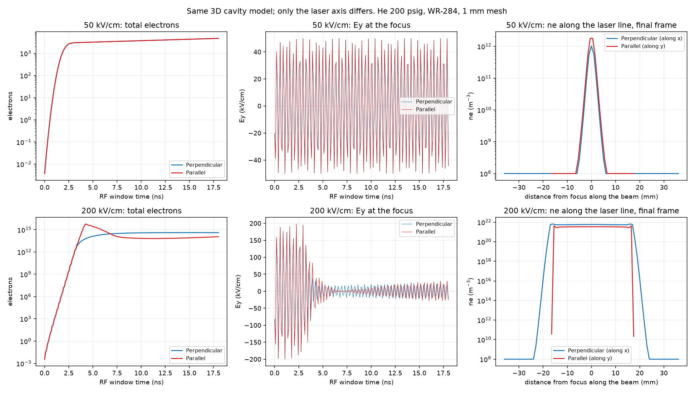
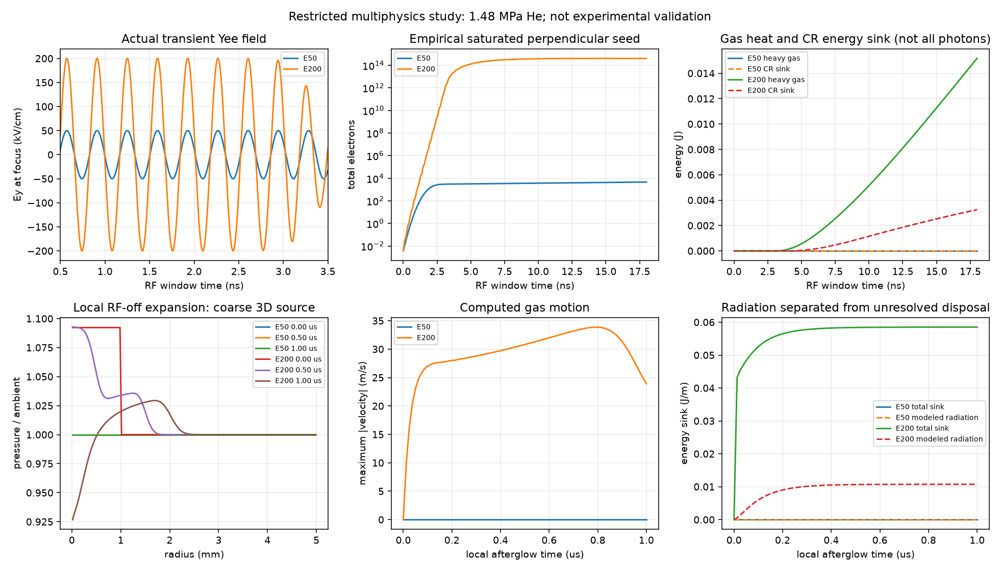
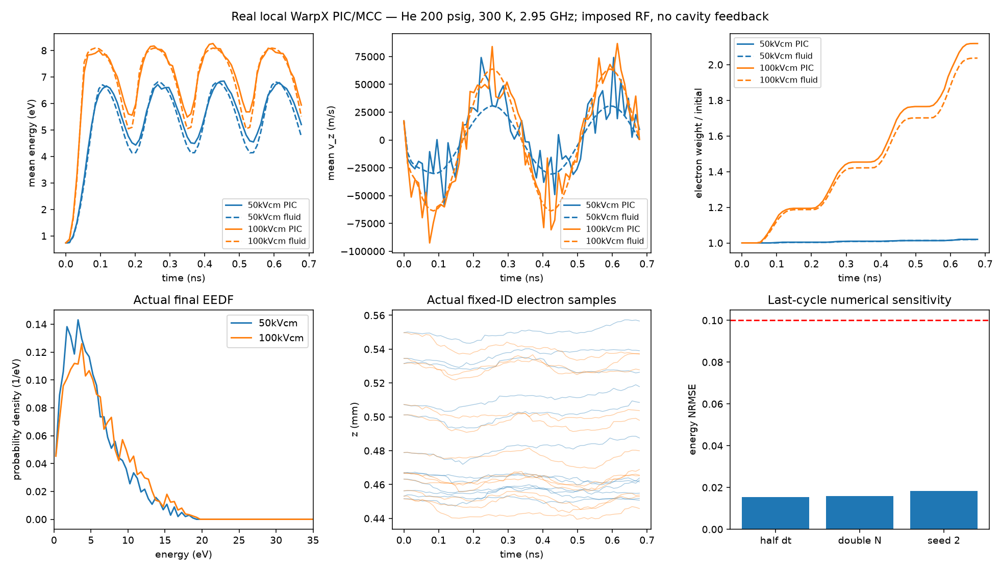
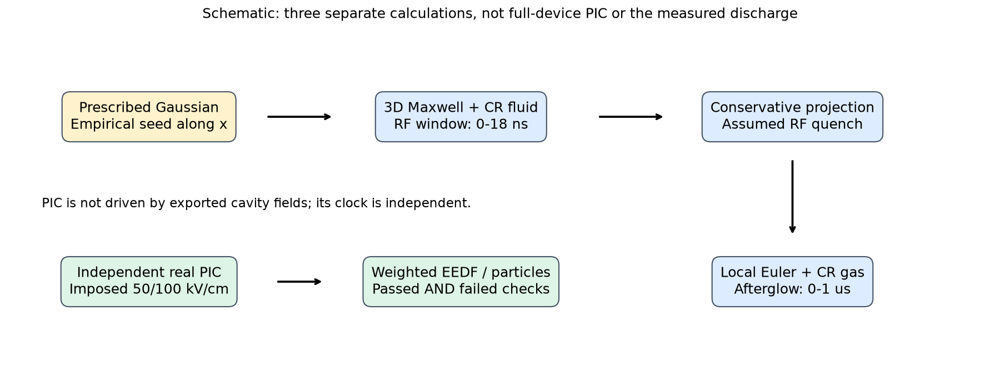

01 / 3D channel growth
From the laser line to the cavity walls
Rods grow along the RF electric field, not along the perpendicular laser. Partial rods can drain the cavity and stall before bridging the broad-wall gap.
How does a laser trigger breakdown in sealed helium? Follow the growth of plasma rods along the RF field, their loading of the cavity, and the uncertain transition from a diffuse column to a contracted channel.
These are the current switch-model reference conditions. The other studies below use their own inputs and sometimes separate model clocks.
Each topic has a figure preview and a link to a wider explanation. Open the interactive viewers when you want to inspect time histories or individual cases.
Rods grow along the RF electric field, not along the perpendicular laser. Partial rods can drain the cavity and stall before bridging the broad-wall gap.

Compare impurity photoionization, negative-ion photodetachment, and sparse background electrons. The approximately 10% RF-only breakdown rate is a user-reported estimate.

After a bridge forms, the rod and resonator evolve together. The apparent glow-to-arc outcome depends strongly on the assumed starting radius and RF power.

See how the beam direction changes the seeded geometry and RF loading. Distinguish the optical path from the field-aligned plasma rod.

Explore gas heating, expansion, compression, and radiation diagnostics. A successful shock benchmark does not establish a shock in the modeled helium case.

Inspect particle histories and electron-energy distributions from an independent local kinetic calculation. Separate passed checks from unresolved validation tests.

Compare input changes and their effects on onset, RF loading, and plasma evolution. Published experimental anchors and high-pressure extrapolations have different scope.

Read the literature reviews and detailed reports, including the Technion experimental source review and its limits for this switch. Find source code, inputs, results, tests, and download scope.

Excited states, dense-plasma electron kinetics and VUV wall feedback, tested at 50–300 psig. Pure-gas avalanches keep Ar/He at about 2. A hypothetical dense seed or strong photon feedback can approach the observed ordering, but the dense seed is far above the reported weak laser seed.
For a guided overview, start with the 3D switch. For assumptions, numerical checks, and experimental comparisons, use the reports. The research package is curated; not every intermediate binary field archive is included.